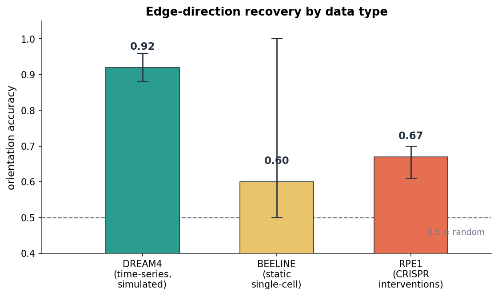
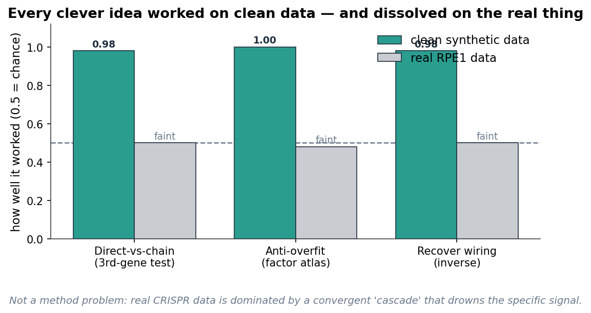
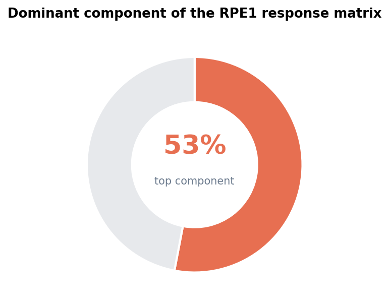
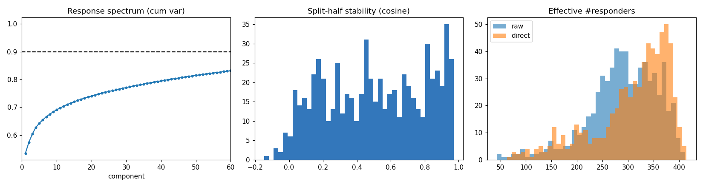
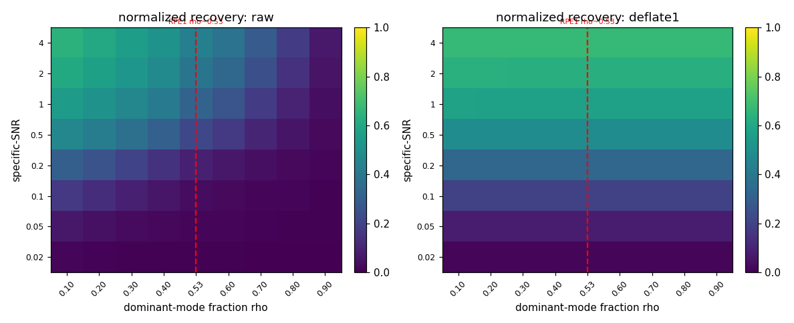
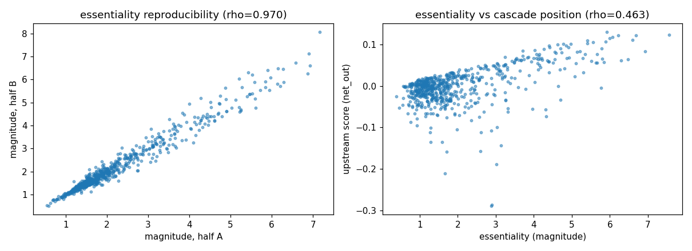

When a directed gene-regulatory edge can be recovered from expression data, when it cannot, and a controlled explanation for the failures.
Repository: github.com/LacrimaeAware/stable-grn-inference · 39 experiments · 213 tests
A gene-regulatory network is a wiring diagram: gene A turns gene B up or down. The standard goal is to recover that wiring from expression data, meaning which genes are active in which cells. This project asks, across 39 controlled experiments, when that is actually possible and when it is not.
The short version, in four parts:
Jump to: Findings · Capstones · What did not work · Lessons · Forward · Experiment log
A symmetric second-order statistic cannot orient an edge: correlation scores A → B and B → A identically, fixing orientation accuracy at exactly 0.50 by construction. This limits the statistic, not static data: a static snapshot's higher moments can carry orientation, and a non-Gaussian (LiNGAM) method orients a planted chain from static data alone (experiment 35). Empirically, lagged time-series orient well on simulated networks (0.81 to 0.96 on DREAM4), static single-cell methods do not orient reliably (mean 0.60, often 0.50), and interventions make 61% of RPE1 gene pairs direction-decidable. Each asymmetry source recovered direction above chance in principle, but none beat the simple baselines on real data.

Correlation, GENIE3, lagged LASSO, and self-persistence were not outperformed by any advanced method tried: a dynamical / DMD operator, spectral and diffusion ordering, non-Gaussian LiNGAM orientation, or higher-order correlation. On DREAM4 the dynamical operator ranks last of the orientable methods (directed AUPR 0.37 versus lagged GENIE3 0.54). This matches the published field, where simple baselines match deep models on this task.

In RPE1, knockouts of essential genes trigger a shared cell-cycle program accounting for about 53% of response variance. This dominant mode drowns gene-specific edges and is not linearly separable from them.


Recovering specific structure from under a dominant shared mode has two axes. One is the dominant-mode fraction (rho), which is fixable by deflation. The other is a specific signal-to-noise floor, which is not. On a full synthetic grid (100 genes, 5 seeds), deflation is rho-invariant (recovery 0.67 across all rho), but no method clears a signal-to-noise floor near 0.2. RPE1 sits in the unrecoverable corner (rho about 0.53, low specific-SNR; best recovery 0.33). The bottleneck is the noise floor, not the dominant mode itself.

Per-gene axes are recoverable where edges are not. The response magnitude / breadth of a knockout (an essentiality measure) and a net-effect upstream / downstream ordering are split-half reproducible (Spearman 0.970 and 0.986) and recover known machinery: ribosome, spliceosome, proteasome, and nuclear pore. This is a strong internal diagnostic with qualitative external concordance, not proof of direct regulation.

A response heterogeneity that looked reproducible, structured, and cell-state-aligned turned out to be sequencing depth: its axis correlates with library size at 0.85 and is one global mode shared across all knockouts. Program discovery that survives reproducibility collapses to housekeeping genes (GAPDH, ACTB) under depth and external-coherence controls. Reproducibility reproduces technical artifacts too; a structure claim must control for depth, show specificity, and validate against external biology.
Every claim above was re-checked against the experiment code and results. The two load-bearing experiments:
Re-run on the full grid (100 genes, 5 seeds) in this checkout. The two-axis result holds: deflation is rho-invariant, the signal-to-noise floor is near 0.2, and RPE1's corner reaches only 0.33. The system is synthetic with known ground truth. Placing RPE1 on the map (measured rho about 0.53) is an interpretation, not a theorem.
Re-run on the RPE1 data in this checkout (651 genes, 11,485 control cells): essentiality reproducibility Spearman 0.970, net-effect ordering 0.986, with known machinery in the top-ranked genes. The reproducibility is internal (split-half) and the machinery recovery is qualitative external concordance. A formal external benchmark (quantitative correlation against DepMap essentiality or CORUM) was not performed.
The dynamical operator loses to lagged GENIE3 on the same pairs and ground truth (exp 33). The single-cell heterogeneity signal is library size (exp 38). No externally-coherent, non-housekeeping, knockout-specific program survives the controls (exp 39).
The directed-edge-recovery question is treated as concluded: a mapped wall with a diagnostic explanation (exp 28) and a reproducible aggregate signal (exp 26). The forward direction, pursued separately, is parameter identifiability and inference for small mechanistic adaptation models, which fits a statistics background and is not a saturated benchmark. Its first tooling step (exp 40) is built and verified on a textbook gene-expression model: observing protein alone, transcription and translation rates are not separately identifiable (Fisher rank 3 of 4); observing mRNA as well makes them identifiable (rank 4 of 4).
| # | Experiment | Result |
|---|---|---|
| 01-04 | DREAM4 baselines | correlation AUPR 0.33 highest; LASSO 0.29, RF 0.30 |
| 07-09 | lagged + dynamic sparse | lagged AUPR 0.30 to 0.53; best Size10 AUPR 0.65 |
| 10-14 | scaling, calibration, mechanism | does not scale to Size100; alpha tracks density; CV/BIC retain 96-100% of oracle |
| 15-18 | BEELINE + orientation diagnostics | static methods transfer; orientation 0.81-0.96 (DREAM4) vs 0.50-1.00 (BEELINE) |
| 19-20 | interventional scouting + RPE1 | 61% decidable; observational AUROC 0.57 |
| 21-25 | response geometry, cleaning, inverse, transfer | top mode 53%; cleaning and deconvolution help on synthetic, not RPE1; no transfer |
| 26 | essentiality and cascade position | reproducible 0.970 / 0.986; recovers known machinery; internal, verified on in-repo data |
| 27 | cascade-adjacent edges | ordering distance uncorrelated with mediation (-0.06) |
| 28 | separability phase diagram | verified full grid: rho fixable, specific-SNR a hard floor (~0.2); RPE1 corner 0.33 |
| 29-32 | whitened asymmetry, dynamical recovery | whitening does not help; operator orients where static cannot; RENGE ordering reproducible 0.75 |
| 33 | dynamical baseline benchmark | no win: last on DREAM4 (0.37 vs 0.54), 2nd on BoolODE (0.41 vs 0.45) |
| 34 | order from static | order recovered (0.82) ties PC1 (0.82); no network gain; higher-order adds spurious edges |
| 35 | non-Gaussian orientation | orients a planted chain but fails on BoolODE (0.29 vs 0.36 at 200 cells; 0.32 vs 0.36 at 5000) |
| 36 | queued directions | consensus does not beat best single lens; 2D recovers the cycle (0.80 vs 0.55) |
| 37-39 | programs and heterogeneity, audited | heterogeneity is library size (corr 0.85); only housekeeping survives controls. Negative |
| 40 | identifiability pipeline (forward) | protein-only cannot separate transcription/translation rate (rank 3/4); both-observed can (4/4) |